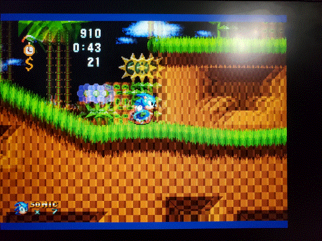
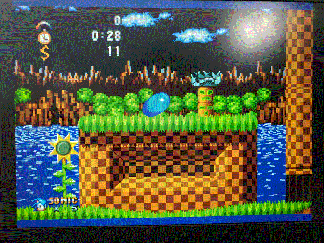
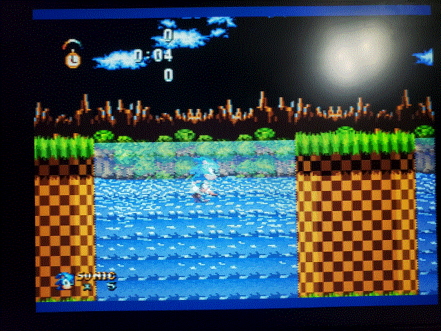
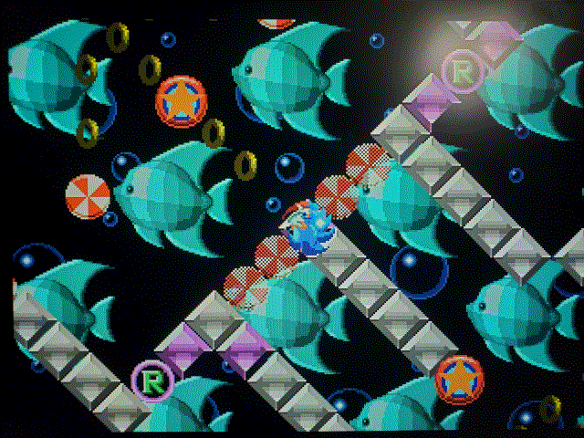
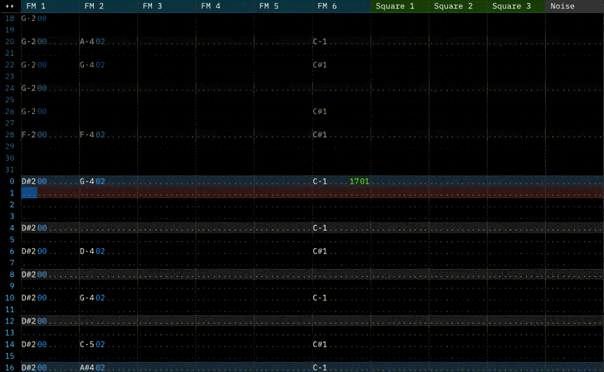

Sonic 1: Random Room of Shit
Sonic’s most random adventure yet – coming to your Genesis on July 31, 1995!


It’s Super Sonic!
Super Speed!
Sonic was already fast before, but with the new Spindash ability, you can achieve speeds never before seen!
The Speed Cap3 is a thing of the past. Run as fast as you can in these new levels!

 Super Graphics!
Transparency?1 Rotation? 3D GRAPHICS?!2 Yessir, the SEGA Genesis has it all. All with performance to show. Beat that, Nintendo.
Super Sound!
5 FM Synth. 1 DAC. 4 PSG. All of these technologies band together to banger soundtracks you’ll never forget.
Get an exclusive look at a prerelease build today for $0.00!
1 Only on supported display types.
2 Pre-rendered.
3 Speed cap still exists for jumps.
©TheWindowsPro98 2017-2022 for the Game
©SEGA 1991-2022 for Sonic the Hedgehog, the SEGA Genesis, and the Sonic the Hedgehog Boxart (the loose inspiration for the site)